Assignment: Database Project
A proof on my process and the construction of a database.
THEA3135, Richard Lau
The question I recieved was 'When is Paul Tillberg going to the Theatre?'.
On the construction of my database, I recieved three CSV files containing
information categorized into three sections. The first being 'Customers',
second as 'Orders,' and the third being 'Shows.'
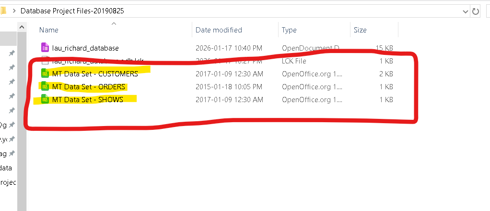
Where do these files represent?
- 'Customers' in the context of a box office represent individuals who purchased tickets.
- Linked towards the customer's purchase would be the 'Orders'.
This goes into things like the pricing or how many tickets they bought.
- The third file, 'Shows', would be the plays/shows that are running, which would be linked to the tickets/orders.
Where did I start?
I started by downloading and opening LibreOffice 25.8. From there I created a new Database File by going into File -> New -> and clicking on 'Database.' I then proceeded to use the default startup settings and created the file.
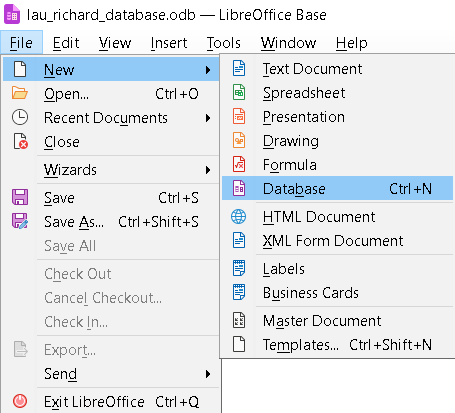
How did I import the data from the CSV files?
After creating my database file, I opened all three CSV files (CUSTOMERS, ORDERS, SHOWS) in LibreOffice. I used the default settings when opening the files.
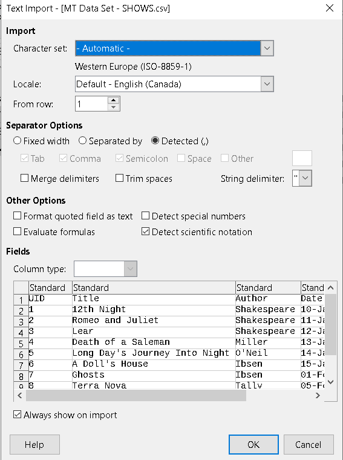
From there I selected all the columns and rows with data and copied the data into my clipboard.
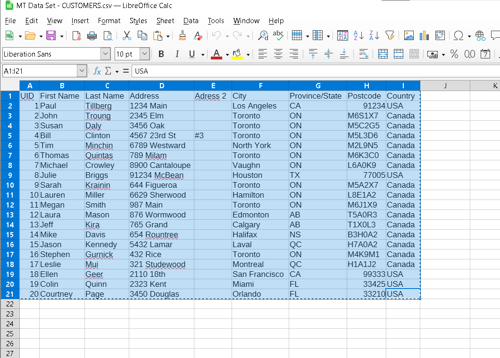
I then went back into my database file and pasted it into the section called 'Tables'. I renamed the table to its category (Customers) and then I created a primary key by default after clicking 'Create'.
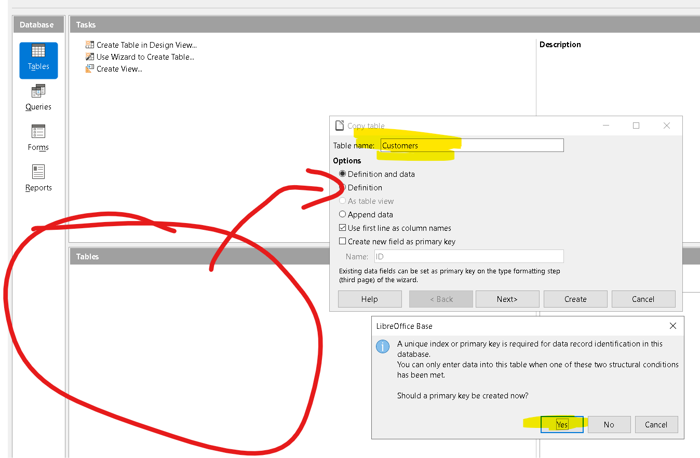
I then repeated this process for the other two CSV files.
After creating the rest of the tables, I edited their values to better match what they represent. This was done by right clicking and on the table and clicking 'Edit'.
I changed the names of some rows like 'PERSON ID' to 'CUSTOMER ID' or gave unique names to the primary keys. This wasn't neccessarily important however it provides clarity. What did matter however was changing the value type inside the 'Orders' table from [ VARCHAR ] to [ BIGINT ] for Customer ID and Show ID. This is so the database knows it can only accept numbers there.
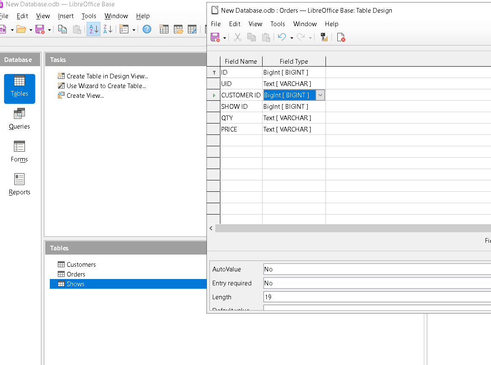
The next step was creating relationships between the tables. To get started, I opened up the tools tab and imported my 'Customer', 'Shows', and 'Orders' tables.
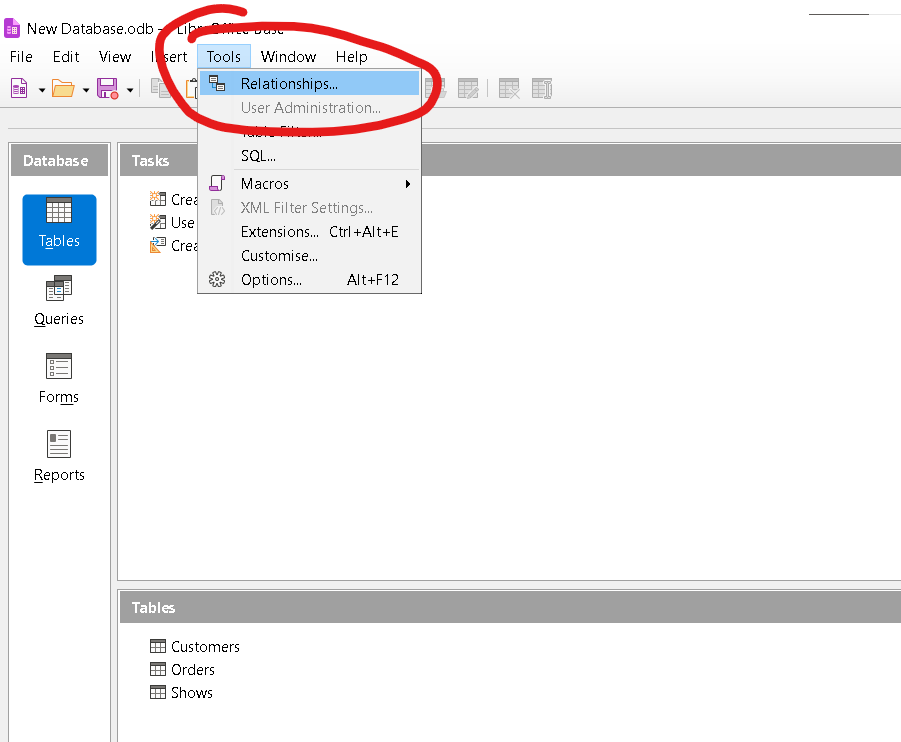
I then added my tables. You will note in the screenshot below that the first row in the list of tables shows 'ID'. These are the primary keys for each individual table. I however, renamed them by editing the tables in the earlier step where I changed the value types for clarity.
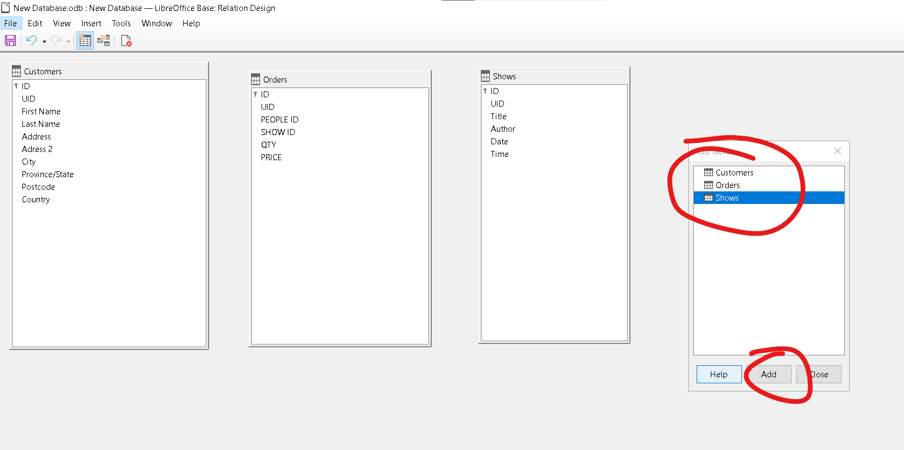
From there, I started linking my tables to create relationships. I clicked and dragged my primary key from the 'Customers' table towards the matching tab in the 'Orders' table. And I clicked and dragged my primary key from Shows toward the corresponding row in the 'Orders' table. From there, my tables are linked and all that's left to do is to create the query.
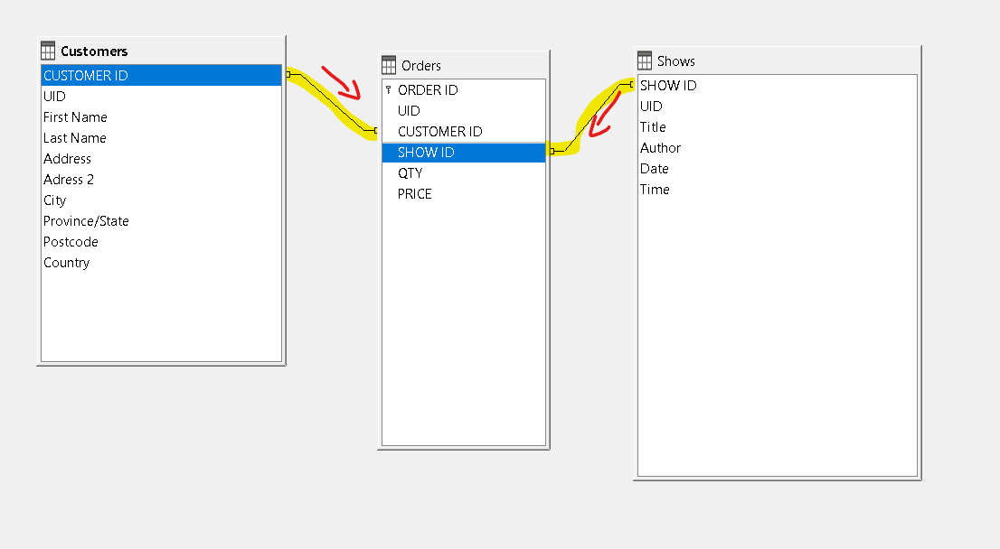
Creating the Query to find when Paul Tillberg is going to the theatre:
To create the query, I started by going to the original database file and clicking on the Queries section and
'Create Query in Design View'.
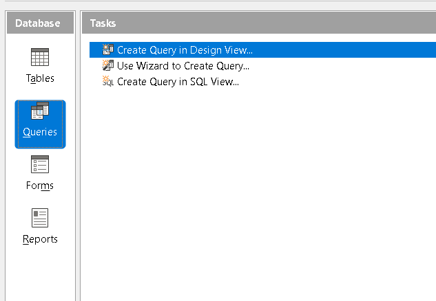
After that I dragged the information I have of Paul Tillberg as well as the information I need from the Tables.
I used the table 'Customers' because the main point of information I have was his first and last name. I also used
the table 'Shows' because the information I needed was under it (Date/Time).
Under 'Criterion,' I put in the name 'Paul' under first name and 'Tillberg' under last name. This will return me
all results under Paul Tillberg, and alongside that, the time he is going to the theatre through Date and Time.
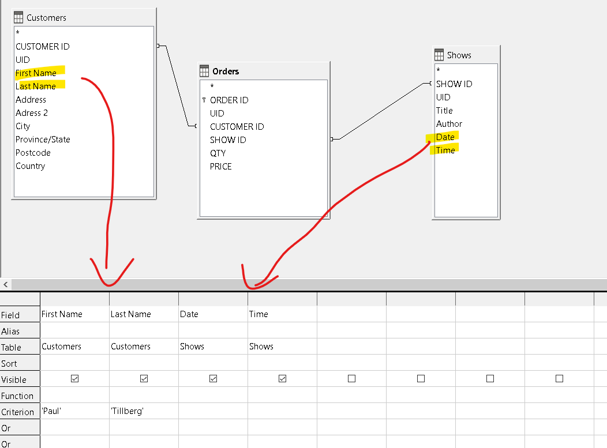
Finally, I ran the Query by clicking F5, and it returned me the results under Paul Tillberg. It also returned
the dates and times they were going to the theatre.

In conclusion, this database query tells us that Paul Tillberg is going to the theatre on January 13th, 14th, and 15th @ 8:00PM.